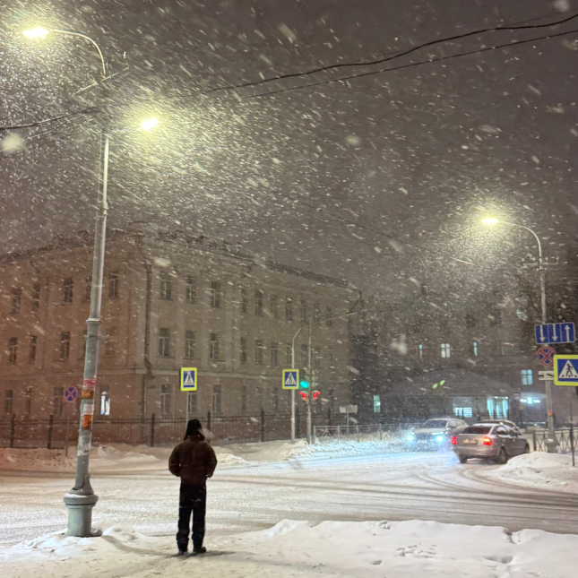

Ваня Денисов

1/3
203
Всем привет! Настоящая зима))
ещё
4 часа назад
Ваня Денисов
1/3
203
Так красиво сегодня на улице! Настоящая зима)) Вспоминается Бродский: «Поздно ночью, в уснувшей долине, на самом дне, в городке, занесенном снегом по ручку двери...»
ещё
2 часа назад